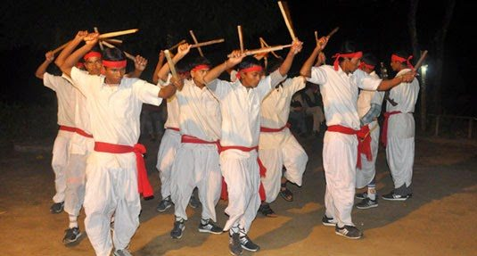

Bhairahawa, also known as Siddharthanagar, is a beautiful city in the Rupandehi district of Nepal. It is situated in the western part of Nepal and shares its borders with the Indian state of
Uttar Pradesh. The city has a rich cultural and historical heritage, and it is a popular tourist destination in Nepal.
Bhairahawa is located just 22 kilometers away from Lumbini, which is the birthplace of Lord Buddha. As a result, it is often referred to as the "Gateway to Lumbini." Many visitors to Lumbini choose to stay in Bhairahawa as it has better infrastructure and amenities. In this article, we will explore Bhairahawa in detail.
Bhairahawa is situated at an altitude of 101 meters above sea level, and it is located at a distance of 283 kilometers from Kathmandu. The city has a tropical monsoon climate, with hot summers and mild winters. The temperature in Bhairahawa ranges from 20°C to 40°C during the summer months and 5°C to 25°C during the winter months.
Bhairahawa has a rich cultural heritage, and it is home to many temples, monasteries, and historical sites. The city is famous for the Maya Devi Temple, which is a UNESCO World Heritage Site. The temple is believed to be the birthplace of Lord Buddha and is visited by thousands of pilgrims every year. The city also has the Lumbini Museum, which showcases the history and culture of the region.
Bhairahawa is a popular tourist destination in Nepal, and it attracts a large number of visitors every year. The city is known for its natural beauty, historical sites, and cultural attractions. The most popular tourist attraction in Bhairahawa is the Maya Devi Temple, which is visited by thousands of pilgrims every year. The temple is surrounded by beautiful gardens and ponds, and it is a peaceful and serene place to visit. Another popular tourist attraction in Bhairahawa is the Lumbini Peace Park, which is a beautiful park that was built to commemorate the birthplace of Lord Buddha. The park is spread over an area of 52 hectares and is home to many gardens, ponds, and sculptures. The city is also famous for the World Peace Pagoda, which is a beautiful white dome-shaped structure that was built to promote peace and harmony in the world. The pagoda is located on a hilltop, and it offers stunning views of the surrounding landscape.
Bhairahawa is famous for its delicious food and cuisine. The city has many restaurants and cafes that serve a variety of local and international cuisine. Some of the popular dishes in Bhairahawa include momos, chow mein, thukpa, dal bhat, and sel roti. The city is also famous for its sweets and desserts, such as laddu, peda, and rasgulla.
Bhairahawa is well-connected to other parts of Nepal and India by road and air. The city has its own airport, which is known as the Gautam Buddha Airport. The airport is located at a distance of 3 kilometers from the city center and has regular flights to Kathmandu and other major cities in Nepal.
The city is also connected to other parts of Nepal and India by road. The Mahendra Highway passes through the city, and it connects Bhairahawa to other major cities in Nepal. The city also has a bus station, from where buses and taxis are available for travel to other parts of Nepal and India.
Bhairahawa is located near the Indian border. It is an important commercial and industrial hub in the region, with a range of business opportunities available. Some potential business ideas in Bhairahawa are:
Manufacturing: Bhairahawa has a growing industrial sector, with a number of manufacturing companies producing goods such as textiles, cement, and plastics. Starting a manufacturing business that produces a product in demand could be a viable option.
Agriculture: Bhairahawa is located in the fertile plains of southern Nepal, making it an ideal location for agriculture. Starting a farm that produces crops like rice, wheat, and vegetables could be a profitable business opportunity.
Hospitality: Bhairahawa is a popular destination for both domestic and international tourists, as it is the gateway to Lumbini, the birthplace of Lord Buddha. Starting a hotel, restaurant, or travel agency could be a lucrative business opportunity in the hospitality industry.
Education: Bhairahawa has a large population of young people, and there is a growing demand for quality education. Starting a school or college that offers high-quality education could be a viable business opportunity.
Bhairahawa has a number of commercial areas, such as the Bhairahawa Bus Park and the New Road area, which are popular shopping destinations. Starting a retail business, such as a clothing store or electronics shop, could be a viable business opportunity.
These are just a few examples of potential business opportunities in Bhairahawa. As with any business, it is important to conduct market research and create a solid business plan before starting a venture.
Bhairahawa is a diverse city in southwestern Nepal, and its population consists of people from different ethnic and caste groups. The caste system is a social hierarchy prevalent in Nepal, which categorizes people into different castes based on their birth.
Here are some of the castes that are present in Bhairahawa:
Brahmin: Brahmins are one of the highest castes in the Hindu social hierarchy. They traditionally served as priests and scholars, and their duties included performing religious rituals and teaching.
Chhetri: Chhetris are another high caste group in Nepal, traditionally associated with the warrior and administrative class. They have played a significant role in Nepali politics and military.

Tharu: Tharus are an indigenous community living in the Terai region of Nepal, including Bhairahawa. They have their own distinct culture, language, and traditions.
Magar: Magars are an ethnic group in Nepal, with a significant population in the western region of the country. They have their own language, culture, and traditions.
Dalit: Dalits, also known as "untouchables," are considered to be the lowest caste in the Hindu social hierarchy. They are often subjected to discrimination and social exclusion, although efforts are being made to promote their rights and welfare.
It is important to note that Nepal's constitution prohibits discrimination based on caste, and there have been efforts to promote social equality and inclusion. However, caste-based discrimination and prejudice still exist in some parts of Nepali society, including Bhairahawa.